Definition
A “marginal effect” (MFX) is a measure of the association between a change in a regressor, and a change in the response variable. More formally, the excellent margins vignette defines the concept as follows:
Marginal effects are partial derivatives of the regression equation with respect to each variable in the model for each unit in the data.
Put differently, the marginal effect measures the association between a change in a regressor \(x\), and a change in the response \(y\). Put differently, differently, the marginal effect is the slope of the prediction function, measured at a specific value of the regressor \(x\).
Marginal effects are extremely useful, because they are intuitive and easy to interpret. They are often the main quantity of interest in an empirical analysis.
In scientific practice, the “Marginal Effect” falls in the same toolbox as the “Contrast.” Both try to answer a counterfactual question: What would happen to \(y\) if \(x\) were different? They allow us to model the “effect” of a change/difference in the regressor \(x\) on the response \(y\).1
To illustrate the concept, consider this quadratic function:
\[y = -x^2\]
From the definition above, we know that the marginal effect is the partial derivative of \(y\) with respect to \(x\):
\[\frac{\partial y}{\partial x} = -2x\]
To get intuition about how to interpret this quantity, consider the response of \(y\) to \(x\). It looks like this:

When \(x\) increases, \(y\) starts to increase. But then, as \(x\) increases further, \(y\) creeps back down in negative territory.
A marginal effect is the slope of this response function at a certain value of \(x\). The next plot adds three tangent lines, highlighting the slopes of the response function for three values of \(x\). The slopes of these tangents tell us three things:
- When \(x<0\), the slope is positive: an increase in \(x\) is associated with an increase in \(y\): The marginal effect is positive.
- When \(x=0\), the slope is null: a (small) change in \(x\) is associated with no change in \(y\). The marginal effect is null.
- When \(x>0\), the slope is negative: an increase in \(x\) is associated with a decrease in \(y\). The marginal effect is negative.

Below, we show how to reach the same conclusions in an estimation context, with simulated data and the marginaleffects function.
marginaleffects function
The marginal effect is a unit-level measure of association between changes in a regressor and changes in the response. Except in the simplest linear models, the value of the marginal effect will be different from individual to individual, because it will depend on the values of the other covariates for each individual.
The marginaleffects function thus produces distinct estimates of the marginal effect for each row of the data used to fit the model. The output of marginaleffects is a simple data.frame, which can be inspected with all the usual R commands.
To show this, we load the library, download the Palmer Penguins data from the Rdatasets archive, and estimate a GLM model:
library(marginaleffects)
dat <- read.csv("https://vincentarelbundock.github.io/Rdatasets/csv/palmerpenguins/penguins.csv")
dat$large_penguin <- ifelse(dat$body_mass_g > median(dat$body_mass_g, na.rm = TRUE), 1, 0)
mod <- glm(large_penguin ~ bill_length_mm + flipper_length_mm,
data = dat, family = binomial)
mfx <- marginaleffects(mod)
head(mfx)
#> rowid type term dydx std.error large_penguin
#> 1 1 response bill_length_mm -0.0009199341 0.0006951380 0
#> 2 2 response bill_length_mm -0.0026043673 0.0019591323 0
#> 3 3 response bill_length_mm -0.0108418910 0.0079149418 0
#> 4 4 response bill_length_mm -0.0095652441 0.0076582721 0
#> 5 5 response bill_length_mm -0.0056069848 0.0042915529 0
#> 6 6 response bill_length_mm -0.0009293834 0.0007080235 0
#> bill_length_mm flipper_length_mm predicted
#> 1 39.1 181 0.01767637
#> 2 39.5 186 0.05184588
#> 3 40.3 195 0.28702661
#> 4 36.7 193 0.23645775
#> 5 39.3 190 0.12030641
#> 6 38.9 181 0.01786130Average MFX
A dataset with one marginal effect estimate per unit of observation is a bit unwieldy and difficult to interpret. Many analysts like to report the “Average Marginal Effect”, that is, the average of all the observation-specific marginal effects. These are easy to compute based on the full data.frame shown above, but the summary function is convenient:
summary(mfx)
#> Average marginal effects
#> type Term Effect Std. Error z value Pr(>|z|) 2.5 %
#> 1 response bill_length_mm -0.00512 0.00353 -1.45029 0.14698 -0.01204
#> 2 response flipper_length_mm 0.02189 0.00122 17.92473 < 2e-16 0.01950
#> 97.5 %
#> 1 0.00180
#> 2 0.02428
#>
#> Model type: glm
#> Prediction type: responseNote that since marginal effects are derivatives, they are only properly defined for continuous numeric variables. When the model also includes categorical regressors, the summary function will try to display relevant (regression-adjusted) contrasts between different categories, as shown above.
You can also extract average marginal effects using tidy and glance methods which conform to the broom package specification:
tidy(mfx)
#> type term estimate std.error statistic p.value
#> 1 response bill_length_mm -0.005119629 0.003530082 -1.450286 0.1469788
#> 2 response flipper_length_mm 0.021890337 0.001221236 17.924734 0.0000000
#> conf.low conf.high
#> 1 -0.01203846 0.001799205
#> 2 0.01949676 0.024283916
glance(mfx)
#> null.deviance df.null logLik AIC BIC deviance df.residual nobs
#> 1 473.8202 341 -108.0567 222.1133 233.6178 216.1133 339 342Typical MFX
Sometimes, we are not interested in all the unit-specific marginal effects, but would rather look at the estimated marginal effects for certain “typical” individuals. The typical function helps us build datasets full of “typical” rows. For example, to generate artificial Adelies and Gentoos with 180mm flippers:
typical(flipper_length_mm = 180,
species = c("Adelie", "Gentoo"),
model = mod)
#> bill_length_mm flipper_length_mm species
#> 1 43.92193 180 Adelie
#> 2 43.92193 180 GentooThe same command can be used (omitting the model argument) to marginaleffects’s newdata argument to compute marginal effects for those (fictional) individuals:
marginaleffects(mod, newdata = typical(flipper_length_mm = 180,
species = c("Adelie", "Gentoo")))
#> rowid type term dydx std.error bill_length_mm
#> 1 1 response bill_length_mm -0.0005758662 0.0003533902 43.92193
#> 2 2 response bill_length_mm -0.0005758662 0.0003533902 43.92193
#> 3 1 response flipper_length_mm 0.0024622958 0.0008480042 43.92193
#> 4 2 response flipper_length_mm 0.0024622958 0.0008480042 43.92193
#> flipper_length_mm species predicted
#> 1 180 Adelie 0.01099037
#> 2 180 Gentoo 0.01099037
#> 3 180 Adelie 0.01099037
#> 4 180 Gentoo 0.01099037When variables are omitted from the typical call, they will automatically be set at their median or mode (depending on variable type).
Counterfactual MFX
The typical function allowed us look at completely fictional individuals. The counterfactual function lets us compute the marginal effects for the actual observations in our dataset, but with a few manipulated values. For example, this code will create a data.frame twice as long as the original dat, where each observation is repeated with different values of the flipper_length_mm variable:
nd <- counterfactual(flipper_length_mm = c(160, 180), model = mod)We see that the rows 1, 2, and 3 of the original dataset have been replicated twice, with different values of the flipper_length_mm variable:
nd[nd$rowid %in% 1:3,]
#> rowid bill_length_mm flipper_length_mm
#> 1 1 39.1 160
#> 2 2 39.5 160
#> 3 3 40.3 160
#> 343 1 39.1 180
#> 344 2 39.5 180
#> 345 3 40.3 180Again, we can use this to compute average (or median, or anything else) marginal effects over the counterfactual individuals:
Conditional MFX (Plot)
The plot_cme function can be used to draw “Conditional Marginal Effects.” This is useful when a model includes interaction terms and we want to plot how the marginal effect of a variable changes as the value of a “condition” (or “moderator”) variable changes:

The marginal effects in the plot above were computed with values of all regressors – except the effect and the condition – held at their means or modes, depending on variable type.
Example: Quadratic
In the “Definition” section of this vignette, we considered how marginal effects can be computed analytically in a simple quadratic equation context. We can now use the marginaleffects function to replicate our analysis of the quadratic function in a regression application.
Say you estimate a linear regression model with a quadratic term:
\[Y = \beta_0 + \beta_1 X^2 + \varepsilon\]
and obtain estimates of \(\beta_0=1\) and \(\beta_1=2\). Taking the partial derivative with respect to \(X\) and plugging in our estimates gives us the marginal effect of \(X\) on \(Y\):
\[\partial Y / \partial X = \beta_0 + 2 \cdot \beta_1 X\] \[\partial Y / \partial X = 1 + 4X\]
This result suggests that the effect of a change in \(X\) on \(Y\) depends on the level of \(X\). When \(X\) is large and positive, an increase in \(X\) is associated to a large increase in \(Y\). When \(X\) is small and positive, an increase in \(X\) is associated to a small increase in \(Y\). When \(X\) is a large negative value, an increase in \(X\) is associated with a decrease in \(Y\).
marginaleffects arrives at the same conclusion in simultated data:
library(tidyverse)
N <- 1e5
quad <- data.frame(x = rnorm(N))
quad$y <- 1 + 1 * quad$x + 2 * quad$x^2 + rnorm(N)
mod <- lm(y ~ x + I(x^2), quad)
marginaleffects(mod, newdata = typical(x = -2:2)) |>
mutate(truth = 1 + 4 * x) |>
select(dydx, truth)
#> dydx truth
#> 1 -6.989756 -7
#> 2 -2.994820 -3
#> 3 1.000116 1
#> 4 4.995053 5
#> 5 8.989989 9We can also plot the result with the plot_cme function (see section below):
plot_cme(mod, effect = "x", condition = "x")
Again, the conclusion is the same. When \(x<0\), an increase in \(x\) is associated with an increase in \(y\). When \(x=0\), the marginal effect is equal to 0. When \(x>0\), an increase in \(x\) is associated with a decrease in \(y\).
Prediction types
The marginaleffect function takes the derivative of the fitted (or predicted) values of the model, as is typically generated by the predict(model) function. By default, predict produces predictions on the "response" scale, so the marginal effects should be interpreted on that scale. However, users can pass a string or a vector of strings to the predict_type argument, and marginaleffects will consider different outcomes.
Typical values include "reponse" and "link", but users should refer to the documentaiton of the predict of the package they used to fit the model to know what values are allowable. documentation.
mod <- glm(am ~ mpg, family = binomial, data = mtcars)
mfx <- marginaleffects(mod, predict_type = c("response", "link"))
summary(mfx)
#> Average marginal effects
#> type Term Effect Std. Error z value Pr(>|z|) 2.5 % 97.5 %
#> 1 link mpg 0.30703 0.11484 2.67349 0.0075066 0.08194 0.53211
#> 2 response mpg 0.04649 0.00886 5.24910 1.5285e-07 0.02913 0.06384
#>
#> Model type: glm
#> Prediction type: response linkRegression tables
Average marginal effects are easy to display in a regression table using packages like modelsummary:
library(modelsummary)
# fit models and store them in a named list
mod <- list(
"Logit" = glm(large_penguin ~ flipper_length_mm + species, data = dat, family = binomial),
"OLS" = lm(body_mass_g ~ flipper_length_mm + bill_length_mm + species, data = dat))
# apply the `marginaleffects` function to all the models using `lapply`
mfx <- lapply(mod, marginaleffects)
# build a table
modelsummary(mfx)| Logit | OLS | |
|---|---|---|
| flipper_length_mm | 0.016 | 27.429 |
| (0.002) | (3.174) | |
| speciesChinstrap | −0.165 | −748.562 |
| (0.043) | (81.534) | |
| speciesGentoo | 0.244 | 90.435 |
| (0.158) | (88.647) | |
| bill_length_mm | 61.736 | |
| (7.126) | ||
| Num.Obs. | 342 | 342 |
| R2 | 0.822 | |
| R2 Adj. | 0.820 | |
| AIC | 199.0 | 4964.7 |
| BIC | 214.4 | 4987.8 |
| Log.Lik. | −95.506 | −2476.373 |
| F | 389.713 |
Supporting new models
In most cases, extending marginaleffects to support new models is easy. Imagine you want to add support for an object called model of class EXAMPLE with N observations.
Step 1: Check if marginaleffects default functions work:
# returns a named vector of coefficients
get_coef(model)
# returns a named vector of predictions
# returns a named matrix of size NxK for models with K levels (e.g., multinomial logit)
get_predict(model)
# returns a named square matrix of size equal to the number of coefficients
get_vcov(model)
# returns a new model object with different stored coefficients
# calling get_predict(model) and get_predict(model_new) should produce different results
model_new <- set_coef(model, rep(0, length(get_coef(model))))
predict(model) != predict(model_new)If all of these functions work out-of-the-box, there’s a good chance your model will be supported automatically. If they do not work, move to…
Step 2: Define the missing methods.
Find the class name of your model by calling:
class(model)Then, create functions (methods) called get_coef.EXAMPLE, get_predict.EXAMPLE, vcov.EXAMPLE, and set_coef.EXAMPLE, with the “EXAMPLE” replaced by the name your model class.
Step 3: Add tests
Create a file called tests/testthat/test-PKGNAME.R and write a few tests. Ideally, we would like to compare the results obtained by marginaleffects to an external source, like the margins package for R, or the margins command for Stata.
Step 4: Finalize
Add your new model class to the lists of supported models in:
- The
sanity_modelfunction of theR/sanity.Rfile. - The supported models CSV table in
data-raw/supported_models.csv. Then, run thedata-raw/supported_models.Rscript to propagate your change throughout the package documentation. - The “Suggests” list in the
DESCRIPTIONfile.
The term “effect” is itself tricky. To be clear, this vignette does not use the word “effect” to imply “causality”.↩︎